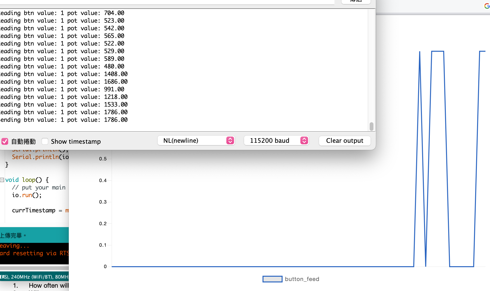
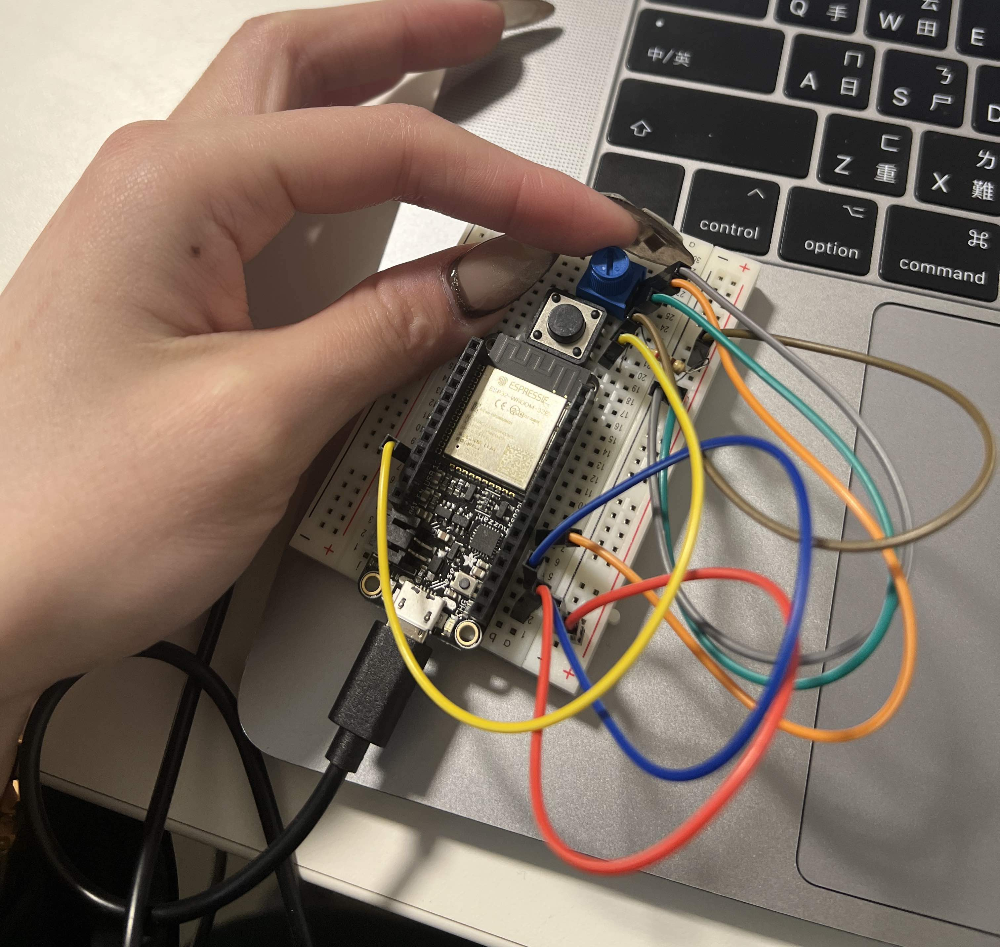
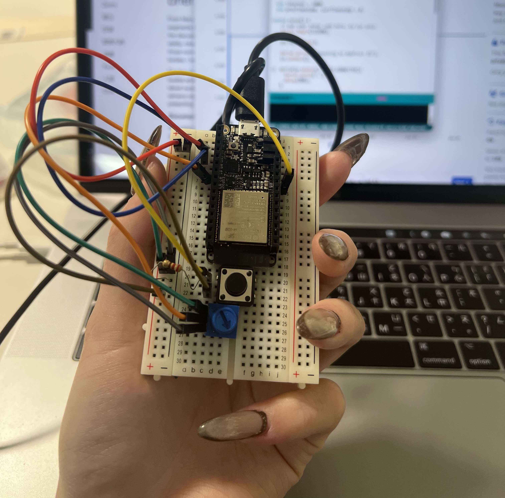

IEDA 1 FOR PROJECT
How often will you measure and how often will you record the values?
I want to use “Conductive Rubber Cord Stretch Sensor “. Inspiration is from my grandma, suffering from “Frozen Shoulder”(Adhesive Capsulitis). It is difficult for her to stretch her shoulder. The only way to solve this problem is to do some rehabilitation such as increasing the activities of shoulder joint. Hence, this sensor can be implemented as a stretching monitor with a wrist band, providing feedback on stretching patterns. Also, it can collect consistent data from consistent changes with exercise patterns.
Will you record all the values or only the changes?
All the values will be recorded. In this way, we could know the interval time, the shifting pattern of shoulder from stretching exercise.
When will the translation of raw values into meaningful data take place - before or after the recording?
After recording, we can visualized the collected data, making users easier understandable for their stretching patterns. For example, we can use some geometric shapes to simulate. Also, we can know whether the situation is improved by monitoring for a period of time through the collected stretching data.


